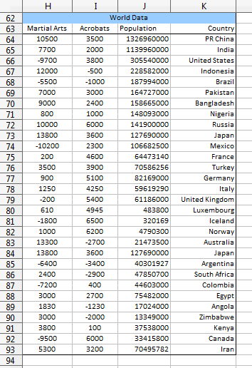
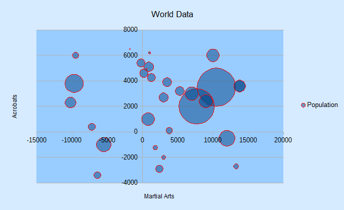
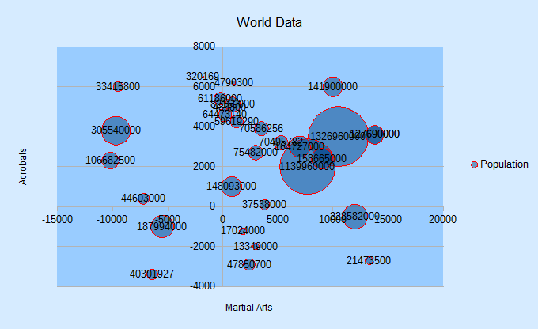
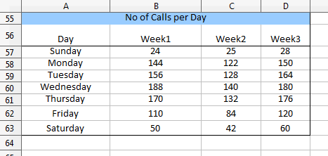
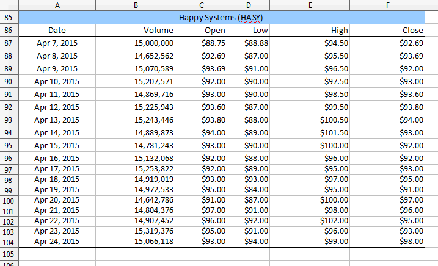
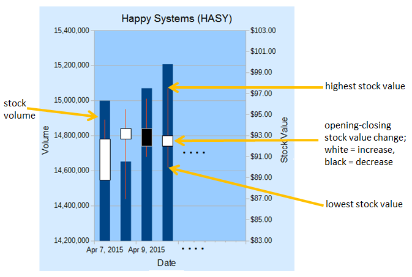
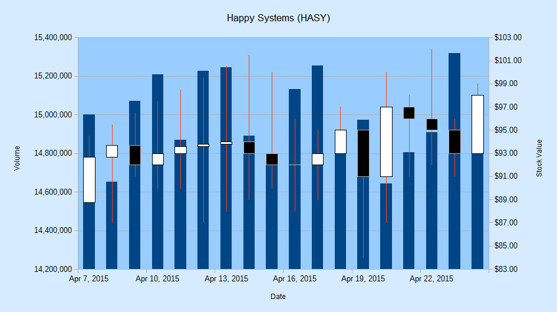
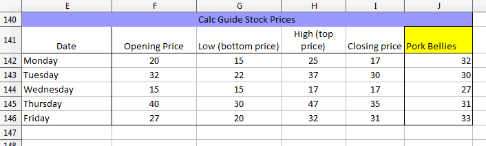
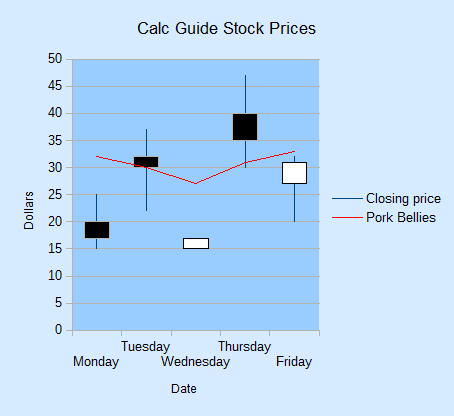

Chapter 32. Bubble, Net, Stock Charts
This chapter concludes my use of the Chart2Views.java example by looking at how bubble, net and stock charts can be generated from spreadsheet data.
The relevant lines of Chart2Views.java are:
// part of Chart2Views.java public static void main(String args[]) { XComponentLoader loader = Lo.loadOffice(); XSpreadsheetDocument doc = Calc.openDoc(CHARTS_DATA, loader);
GUI.setVisible(doc, true); XSpreadsheet sheet = Calc.getSheet(doc, 0);
// ---- use different chart templates ----
labeledBubbleChart(doc, sheet); // see section 1
// netChart(doc, sheet); // section 2
// happyStockChart(doc, sheet); // section 3 // stockPricesChart(doc, sheet); // section 4
Lo.waitEnter(); Lo.closeDoc(doc); Lo.closeOffice(); } // end of main()
1. The Bubble Chart
A bubble chart is a variation of a scatter chart where each data point shows the relationship between three variables. Two variables are used for a bubble's (x, y) coordinate, and the third affects the bubble's size.
labeledBubbleChart() in Chart2Views.java utilizes the "World data" table in "chartsData.ods" (see Figure 1).
Topics
The Bubble
Chart; The Net Chart; The Stock Chart: basic and modified candle sticks; Stock Chart and Line Graph Example folders: "Chart2 Tests" and "Utils"

Figure 1. The "World data" Table.
The data range passed to the Chart.insertChart() uses the first three columns of the table; the "Country" column is added separately. The generated scatter chart is shown in Figure 2.

Figure 2. Bubble Chart for the Table in Figure 1.
labeledBubbleChart() is:
// in Chart2Views.java private static void labeledBubbleChart(XSpreadsheetDocument doc, XSpreadsheet sheet) { CellRangeAddress rangeAddr = Calc.getAddress(sheet, "H63:J93"); XChartDocument chartDoc = Chart2.insertChart(sheet, rangeAddr, "A62",18,11, "Bubble"); Calc.gotoCell(doc, "A62");
Chart2.setTitle(chartDoc, Calc.getString(sheet, "H62")); Chart2.setXAxisTitle(chartDoc, Calc.getString(sheet, "H63")); Chart2.setYAxisTitle(chartDoc, Calc.getString(sheet, "I63")); Chart2.rotateYAxisTitle(chartDoc, 90); Chart2.viewLegend(chartDoc, true);
// change the data points
XDataSeries[] ds = Chart2.getDataSeries(chartDoc);
Props.setProperty(ds[0], "Transparency", 50);
// 100 == fully transparent
Props.setProperty(ds[0], "BorderStyle", LineStyle.SOLID);
Props.setProperty(ds[0], "BorderColor", Calc.RED);
Props.setProperty(ds[0], "LabelPlacement", Chart2.DP_CENTER); // Chart2.setDataPointLabels(chartDoc, Chart2.DP_NUMBER);
/ String sheetName = Calc.getSheetName(sheet); String label = sheetName + "." + "K63"; String names = sheetName + "." + "K64:K93"; Chart2.addCatLabels(chartDoc, label, names); / } // end of labeledBubbleChart()
The transparency and border properties of all the data points are set via the DataPointProperties class for the data series. Without transparency, large bubbles could obscure or completely hide smaller bubbles.
If the call to Chart2.setDataPointLabels() is uncommented, the result is messy, as shown in Figure 3.

Figure 3. Numerically Labeled Bubble Chart for the Table in Figure 1.
Instead of labeling the bubbles with population sizes, it would be better to use the "Country" values (see Figure 1). Chart2.addCatLabels() implements this feature, producing Figure 4.

Figure 4. Category Labeled Bubble Chart for the Table in Figure 1.
Chart2.addCatLabels() employs the "Country" data to create an XLabeledDataSequence object which is assigned the role "categories". It is then assigned to the x-axis as category-based scale data:
// in the Chart2 class
public static void addCatLabels(XChartDocument chartDoc,
String dataLabel, String dataRange)
{
// create 'categories' labeled data sequence
XDataProvider dp = chartDoc.getDataProvider();
XLabeledDataSequence dLSeq =
createLDSeq(dp, "categories", dataLabel, dataRange);
// assign sequence to x-axis as category scale data XAxis axis = getAxis(chartDoc, X_AXIS, 0); if (axis == null) return; ScaleData sd = axis.getScaleData(); sd.Categories = dLSeq; axis.setScaleData(sd);
setDataPointLabels(chartDoc, Chart2.DP_CATEGORY); // label the data points with categories } // end of addCatLabels()
When setDataPointLabels() displays category data for the points, the new x-axis categories are utilized.
2. The Net Chart
The net chart (also called a radar chart) is useful for comparing multiple columns of data (often between three and eight columns) in a 2D arrangement that resembles a spider's web. Although net charts have an interesting look, a lot of people dislike them (e.g. see "A Critique of Radar Charts" by Graham Odds at http://blog.scottlogic.com/2011/09/23/a-critique-of-radar-charts.html).
netChart() in Chart2Views.java utilizes the "No of Calls per Day" table in "chartsData.ods" (see Figure 5).

Figure 5. The "No of Calls per Day" Table.
The generated net chart is shown in Figure 6.

Figure 6. Net Chart for the Table in Figure 5.
netChart() is:
// in Chart2Views.java private static void netChart(XSpreadsheetDocument doc, XSpreadsheet sheet) { CellRangeAddress rangeAddr = Calc.getAddress(sheet, "A56:D63"); XChartDocument chartDoc = Chart2.insertChart(sheet, rangeAddr, "E55",16,11, "NetLine"); // Net, NetLine, NetSymbol // StackedNet, PercentStackedNet Calc.gotoCell(doc, "E55");
Chart2.setTitle(chartDoc, Calc.getString(sheet, "A55")); Chart2.viewLegend(chartDoc, true); Chart2.setDataPointLabels(chartDoc, Chart2.DP_NONE);
// reverse x-axis so days increase clockwise around net XAxis xAxis = Chart2.getXAxis(chartDoc); ScaleData sd = xAxis.getScaleData(); sd.Orientation = AxisOrientation.REVERSE; xAxis.setScaleData(sd); } // end of netChart()
Different net chart templates allow points to be shown, the areas filled with color, and the lines to be stacked or displayed as percentages.
netChart() changes the x-axis which wraps around the circumference of the chart. By default, the axis is drawn in a counter-clockwise direction starting from the top of the net. This order doesn't seem right for the days of the week in this example, so I made the order clockwise, as in Figure 6.
3. The Stock Chart
A stock chart is a specialized column graph for displaying stocks and shares information. All stock chart templates require at least three columns of data concerning the lowest price, highest price, and closing price of a stock (or share). It's also possible to include two other columns that detail the stock's opening price and transaction volume.
The stock template names reflect the data columns they utilize: StockLowHighClose StockOpenLowHighClose StockVolumeLowHighClose StockVolumeOpenLowHighClose The names also indicate the ordering of the columns in the data range supplied to the template. For example, "StockVolumeOpenLowHighClose" requires five columns of data in the order: transaction volume, opening price, lowest price, highest price, and closing price.
happyStockChart() in Chart2Views.java utilizes the "Happy Systems (HASY)" table in "chartsData.ods" (see Figure 7).

Figure 7. The "Happy Systems (HASY)" Table.
The table has six columns, the first being the x-axis categories, which are usually dates. The other columns follow the order required by the "StockVolumeOpenLowHighClose" template.
The generated stock chart is shown in Figure 8.

Figure 8. Stock Chart for the Table in Figure 7.
The chart is made up of two graphs with a common x-axis: a column graph for the stock volume on each day, and a candle-stick graph showing the lowest, opening, closing, and highest stock values. Figure 9 gives details of how these elements are drawn.

Figure 9. The Elements of a Stock Chart.
The thin red lines drawn on the columns in Figure 9 denote the range between the lowest and highest stock value on that day. The white and black blocks represent the stock's change between its opening and closing price. A white block (often called a "white day") means the price has increased, while black (a "black day") means that it has decreased.
happyStockChart() is:
// in Chart2Views.java private static void happyStockChart(XSpreadsheetDocument doc, XSpreadsheet sheet) { CellRangeAddress rangeAddr = Calc.getAddress(sheet, "A86:F104"); XChartDocument chartDoc = Chart2.insertChart(sheet, rangeAddr, "A105", 25, 14, "StockVolumeOpenLowHighClose"); Calc.gotoCell(doc, "A105");
Chart2.setTitle(chartDoc, Calc.getString(sheet, "A85")); Chart2.setXAxisTitle(chartDoc, Calc.getString(sheet, "A86")); Chart2.setYAxisTitle(chartDoc, Calc.getString(sheet, "B86")); Chart2.rotateYAxisTitle(chartDoc, 90);
Chart2.setYAxis2Title(chartDoc, "Stock Value"); Chart2.rotateYAxis2Title(chartDoc, 90);
Chart2.setDataPointLabels(chartDoc, Chart2.DP_NONE);
// too cluttered if numerical data is shown
// change 2nd y-axis min and max; default is poor ($0 - $20) XAxis yAxis2 = Chart2.getYAxis2(chartDoc); ScaleData sd = yAxis2.getScaleData(); sd.Minimum = 83; sd.Maximum = 103; yAxis2.setScaleData(sd);
// more stock chart code; explained in a moment...
} // end of happyStockChart()
happyStockChart() sets and rotates the secondary y-axis title, which appears on the right of the chart. Chart2.setYAxis2Title() and Chart2.rotateYAxis2Title() are implemented in the same way as Chart2.setYAxisTitle() and Chart2.rotateYAxisTitle() described in Chapter 29, section 3.
happyStockChart() also changes the second y-axis' range; the default shows prices between $0 and $20, which is too low. New minimum and maximum values are assigned to the axis' scale data.
3.1. Modifying the Chart Dates
A common problem is that date information clutters the stock chart, making it harder to read. Figure 8 shows that the stock template is clever enough to only draw every second date, but this is still too much information for the limited space.
One solution is to increase the x-axis interval so a tick mark (and date string) is only drawn for every third day, as in Figure 10.

Figure 10. Stock Chart with Three-day Intervals for the X-Axis.
Changing the interval is implemented by adjusting the time increment for the x-axis in its ScaleData object:
// part of happyStockChart() in Chart2Views.java...
:
// change x-axis type from number to date XAxis xAxis = Chart2.getXAxis(chartDoc); sd = xAxis.getScaleData(); sd.AxisType = AxisType.DATE;
// set major increment to 3 days TimeInterval ti = new TimeInterval(3, TimeUnit.DAY); TimeIncrement tc = new TimeIncrement(); tc.MajorTimeInterval = ti; sd.TimeIncrement = tc; xAxis.setScaleData(sd);
Before the interval can be changed, the axis type must be changed to be of type DATE. Information on the ScaleData class can be accessed by calling lodoc chart2 scaledata.
Another technique for making the dates easier to read is to rotate their labels. The following code rotates each label counter-clockwise by 45 degrees:
// part of happyStockChart() in Chart2Views.java...
:
XAxis xAxis = Chart2.getXAxis(chartDoc); Props.setProperty(xAxis, "TextRotation", 45);
The resulting chart is shown in Figure 11.

Figure 11. Stock Chart with Rotated X-Axis Labels.
Note that the template has automatically switched back to showing every date instead of every second one in Figure 8.
3.2. Changing the Stock Values Appearance
This section describes two changes to the candle stick part of the chart: adjusting the colors used in the "white days" and "black days" blocks, and making the high-low stock line easier to read. The results appear in Figure 12.

Figure 12. Stock Chart with Modified Candle Sticks.
A stock chart is made up of two chart types: a column chart type for the volume information, and a candle stick chart type for the stock prices. This information can be listed by calling Chart2.printChartTypes():
// in happyStockChart() Chart2Views.javaChart2.printChartTypes(chartDoc);
It produces:
No. of chart types: 2 com.sun.star.chart2.ColumnChartType com.sun.star.chart2.CandleStickChartType
In order to affect the candle stick chart type's data it is necessary to access its XChartType instance. This can be done with the two-argument version of Chart2.findChartType():
// in happyStockChart()
XChartType candleCT = Chart2.findChartType(chartDoc,
"CandleStickChartType");
Figure 13 shows that the XChartType interface is supported by the ChartType service, and the CandleStickChartType subclass.

Figure 13. The ChartType Service.
CandleStickChartType contains some useful properties, including "WhiteDay" and "BlackDay" (for details call lodoc chart2 CandleStickChartType). These properties store sets containing multiple values from the FillProperties and LineProperties services. They can be accessed like so:
// part of happyStockChart() in Chart2Views.java...
:
XChartType candleCT = Chart2.findChartType(chartDoc,
"CandleStickChartType");
XPropertySet props = Lo.qi(XPropertySet.class,
Props.getProperty(candleCT, "WhiteDay"));
Props.showObjProps("WhiteDay", props);
Props.setProperty(props, "FillColor", Calc.GREEN);
The same sort of change can be done to the "FillColor" property inside the "BlackDay" property set. Both changes are implemented inside Chart2.colorStockBars():
// in the Chart2 class
public static void colorStockBars(XChartType ct,
int wDayColor, int bDayColor)
{ if (!ct.getChartType().equals(
"com.sun.star.chart2.CandleStickChartType"))
System.out.println("Chart type not a candle stick: " +
ct.getChartType());
else {
XPropertySet props = Lo.qi(XPropertySet.class,
Props.getProperty(ct, "WhiteDay"));
Props.setProperty(props, "FillColor", wDayColor);
props = Lo.qi(XPropertySet.class,
Props.getProperty(ct, "BlackDay"));
Props.setProperty(props, "FillColor", bDayColor);
} } // end of colorStockBars()
Chart2.findChartType() and Chart2.colorStockBars() are called at the end of happyStockChart() to change the "white day" blocks to green and the "black day" blocks to red:
// part of happyStockChart() in Chart2Views.java...
:
XChartType candleCT = Chart2.findChartType(chartDoc,
"CandleStickChartType");
Chart2.colorStockBars(candleCT, Calc.GREEN, Calc.RED);
Making the high-low lines thicker and yellow requires access to the data series in the
candle stick chart type (as shown in Figure 13). This is implemented by using the two-
argument version of Chart2.getDataSeries():
XDataSeries[] ds = Chart2.getDataSeries(chartDoc,
"CandleStickChartType");
The high-low lines are adjusted via the "LineWidth" and "Color" properties in the
series. The code at the end of happyStockChart() is:
// part of happyStockChart() in Chart2Views.java...
:
XDataSeries[] ds = Chart2.getDataSeries(chartDoc,
"CandleStickChartType");
Props.setProperty(ds[0], "LineWidth", 120); // in 1/100 mm
Props.setProperty(ds[0], "Color", Calc.YELLOW);
4. Adding a Line Graph to a Stock Chart
stockPricesChart() in Chart2Views.java utilizes the "Calc Guide Stock Prices" table in "chartsData.ods" (see Figure 14).

Figure 14. The "Calc Guide Stock Prices" Table.
The stock chart is created using the first five columns, excluding the "Pork Bellies" data. There's no "Volume" column for the stocks, so the "StockOpenLowHighClose" template is employed.
The stock chart is shown in Figure 15.

Figure 15. Stock Chart for the Table in Figure 14.
stockPricesChart() is:
// in Chart2Views.java private static void stockPricesChart(XSpreadsheetDocument doc, XSpreadsheet sheet) { CellRangeAddress rangeAddr = Calc.getAddress(sheet, "E141:I146"); XChartDocument chartDoc = Chart2.insertChart(sheet, rangeAddr, "E148", 12, 11, "StockOpenLowHighClose"); Calc.gotoCell(doc, "A139");
Chart2.setTitle(chartDoc, Calc.getString(sheet, "E140")); Chart2.setDataPointLabels(chartDoc, Chart2.DP_NONE); Chart2.setXAxisTitle(chartDoc, Calc.getString(sheet, "E141")); Chart2.setYAxisTitle(chartDoc, "Dollars"); Chart2.rotateYAxisTitle(chartDoc, 90);
// more code for adding the "Pork Bellies" line...
} // end of stockPricesChart()
A line graph showing the movement of "Pork Bellies" is added to the chart by Chart2.addStockLine(). The additional code at the end of stockPricesChart() is:
// part of stockPricesChart() in Chart2Views.java...
:
String sheetName = Calc.getSheetName(sheet); String porkLabel = sheetName + "." + "J141"; String porkPoints = sheetName + "." + "J142:J146"; Chart2.addStockLine(chartDoc, porkLabel, porkPoints);
Chart2.viewLegend(chartDoc, true);
The resulting change to the stock chart is shown in Figure 16.

Figure 16. Stock Chart with Line Graph for the Table in Figure 15.
A data series belongs to a chart type, which is part of the coordinates system.
Therefore the first task is to obtain the chart's coordinate system. A new line chart type is added to it, and an empty data series is inserted into the chart type.
The addition of a new chart type to the chart's coordinate system is preformed by Chart2.addChartType(). The following adds a line chart type:
// part of Chart2.addStockLine(); see below...
XChartType ct = Chart2.addChartType(chartDoc, "LineChartType");
Chart2.addChartType() uses Chart2.getCoordSystem() to get the chart's coordinate system, and then converts it into an XChartTypeContainer so the new chart type can be added:
// in the Chart2 class
public static XChartType addChartType(XChartDocument chartDoc,
String chartType)
{ // create new chart type
XChartType ct = Lo.createInstanceMCF(XChartType.class,
"com.sun.star.chart2." + chartType);
if (ct == null) {
System.out.println("Unable to create XChartType: "+chartType);
return ct;
}
// add chart type to coord system
XCoordinateSystem coordSys = getCoordSystem(chartDoc);
XChartTypeContainer ctCon =
Lo.qi(XChartTypeContainer.class, coordSys);
ctCon.addChartType(ct);
return ct;
} // end of addChartType()
Chart2.addChartType() returns a reference to the new chart type, and an empty data series is added to it by converting the chart type into an XDataSeriesContainer:
// part of Chart2.addStockLine(); see below...
:
XChartType ct = addChartType(chartDoc, "LineChartType");
XDataSeriesContainer dataSeriesCnt =
Lo.qi(XDataSeriesContainer.class, ct);
// create (empty) data series in the line chart
XDataSeries ds = Lo.createInstanceMCF(XDataSeries.class,
"com.sun.star.chart2.DataSeries");
if (ds == null) {
System.out.println("Unable to create XDataSeries: " + ds);
return;
}
dataSeriesCnt.addDataSeries(ds);
This empty data series is filled with data points via its XDataSink interface, using the steps shown in Chapter 31, section 5.1, Figure 13. A DataProvider service is required so that two XDataSequence objects can be instantiated, one for the label of an XLabeledDataSequence object, the other for its data. The XDataSequence object representing the data must have its "Role" property set to "values-y" since it will become the y-coordinates of the line graph.
The task of building the XLabeledDataSequence object is handled by Chart2.createLDSeq(), which I used in Chapter 31, section 5.1 to add error bars to a scatter chart, and in section 1 to place category labels in a bubble chart.
The code is:
// part of Chart2.addStockLine(); see below...
:
// treat series as a data sink XDataSink dataSink = Lo.qi(XDataSink.class, ds);
// build a sequence representing the y-axis data
XDataProvider dp = chartDoc.getDataProvider();
XLabeledDataSequence dLSeq =
createLDSeq(dp, "values-y", dataLabel, dataRange);
// add sequence to the sink XLabeledDataSequence[] ldSeqArr = { dLSeq }; dataSink.setData(ldSeqArr);
All the preceding code fragments of this section are wrapped up inside Chart2.addStockLine():
// in the Chart2 class
public static void addStockLine(XChartDocument chartDoc,
String dataLabel, String dataRange)
{ // add (empty) line chart to the doc
XChartType ct = addChartType(chartDoc, "LineChartType");
XDataSeriesContainer dataSeriesCnt =
Lo.qi(XDataSeriesContainer.class, ct);
// create (empty) data series in the line chart
XDataSeries ds = Lo.createInstanceMCF(XDataSeries.class,
"com.sun.star.chart2.DataSeries");
if (ds == null) {
System.out.println("Unable to create XDataSeries: " + ds);
return;
}
Props.setProperty(ds, "Color", 0xFF0000);
dataSeriesCnt.addDataSeries(ds);
// treat series as a data sink XDataSink dataSink = Lo.qi(XDataSink.class, ds);
// build a sequence representing the y-axis data
XDataProvider dp = chartDoc.getDataProvider();
XLabeledDataSequence dLSeq =
createLDSeq(dp, "values-y", dataLabel, dataRange);
// add sequence to the sink XLabeledDataSequence[] ldSeqArr = { dLSeq }; dataSink.setData(ldSeqArr); } // end of addStockLine()
Chart2.addStockLine() is passed a reference to the chart document, and references to the label and data for the line graph:
// part of stockPricesChart() in Chart2Views.java...
:
String sheetName = Calc.getSheetName(sheet); String porkLabel = sheetName + "." + "J141"; String porkPoints = sheetName + "." + "J142:J146"; Chart2.addStockLine(chartDoc, porkLabel, porkPoints);